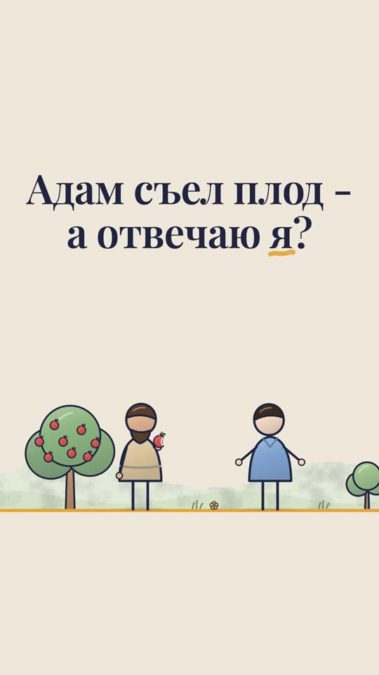
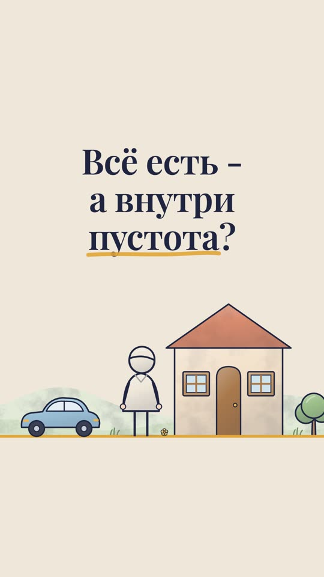
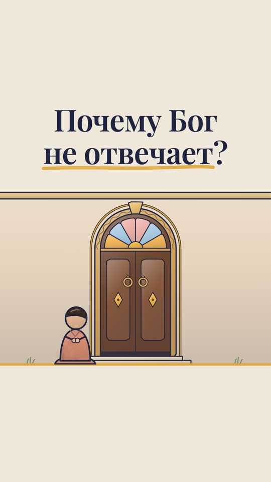
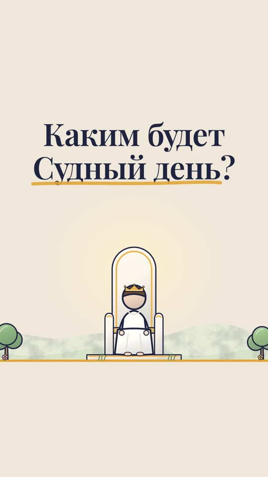
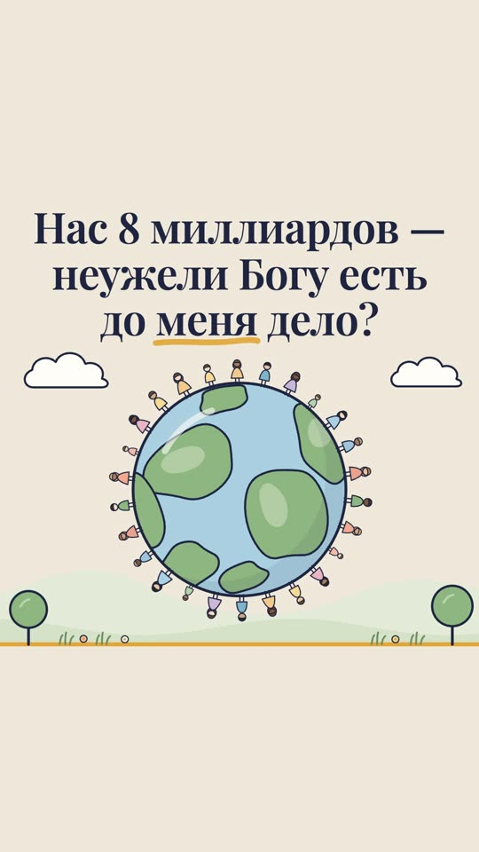
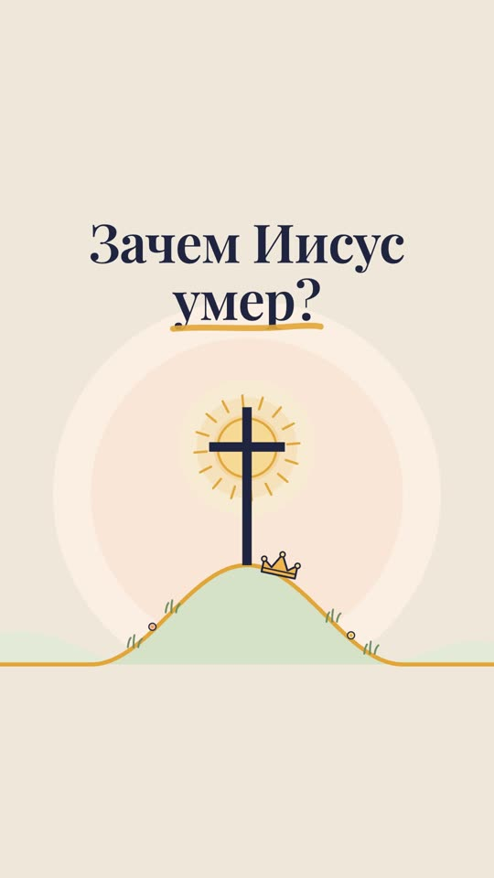
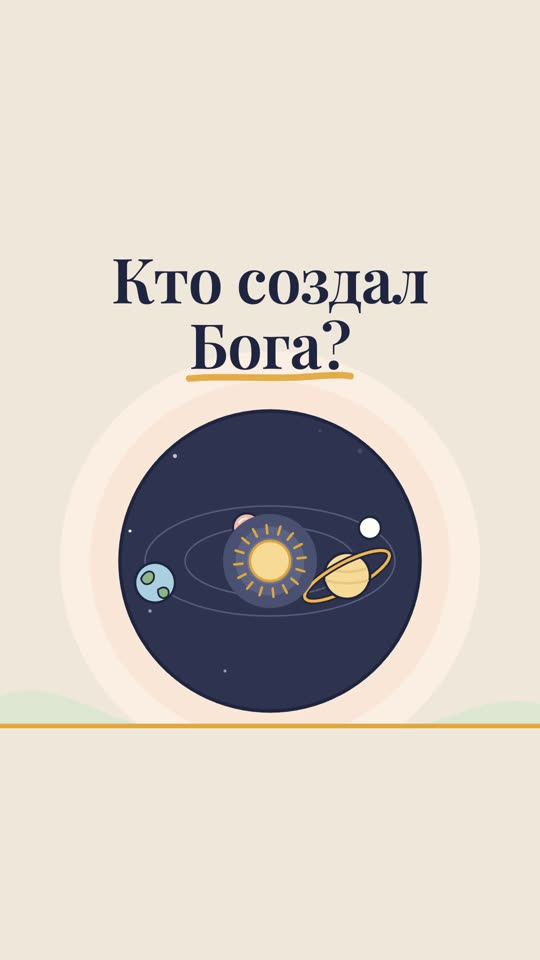

Ответы из видео
Ты пришёл из нашего Instagram? Найди видео, которое смотрел, и открой подробный ответ.
Плохое в жизни — это Бог меня наказывает?
 Убийца покается — и попадёт в рай?
Как избавиться от чувства вины?
Убийца покается — и попадёт в рай?
Как избавиться от чувства вины?

Адам съел плод — а отвечаю я?
Всё есть — а внутри пустота? Зачем Богу умирать за такого, как я? Бог любит меня — или того, кем я притворяюсь? Если Бог всё знает заранее, у меня есть выбор? Библию просто выдумали люди?Убийца покается — и попадёт в рай?
Как избавиться от чувства вины?

Почему Бог не отвечает? Почему Бог всё запрещает? Люди не меняются?
Каким будет Судный день? Мертвецы встают из могил — это Хэллоуин или Библия? Нагрешу, а потом покаюсь — так можно? Можно ли потерять спасение? Как заслужить Божью любовь? Нужны ли свечки, иконы и священник, чтобы Бог тебя услышал?
Нас восемь миллиардов. Неужели Богу есть до меня дело? Я же хороший человек. Разве этого мало? Если Бог любит, зачем существует ад? Может ли Бог простить мне всё, что я сделал? Зачем Бог создал человека, если знал, что тот согрешит? Если Бог есть, почему Он просто не покажется всем?
Зачем Иисус умер? Почему Бог допускает страдания?
Кто создал Бога? Что будет после смерти?